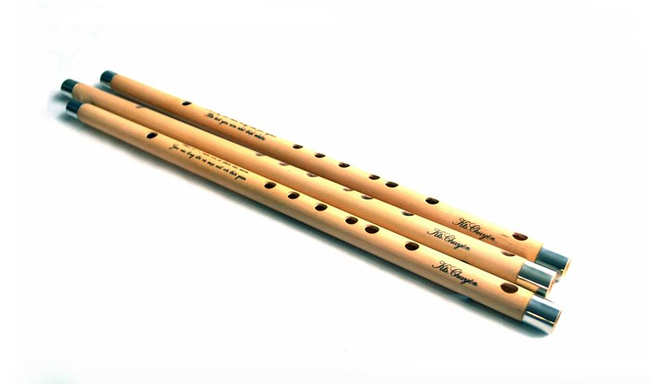
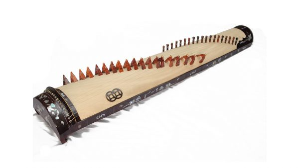
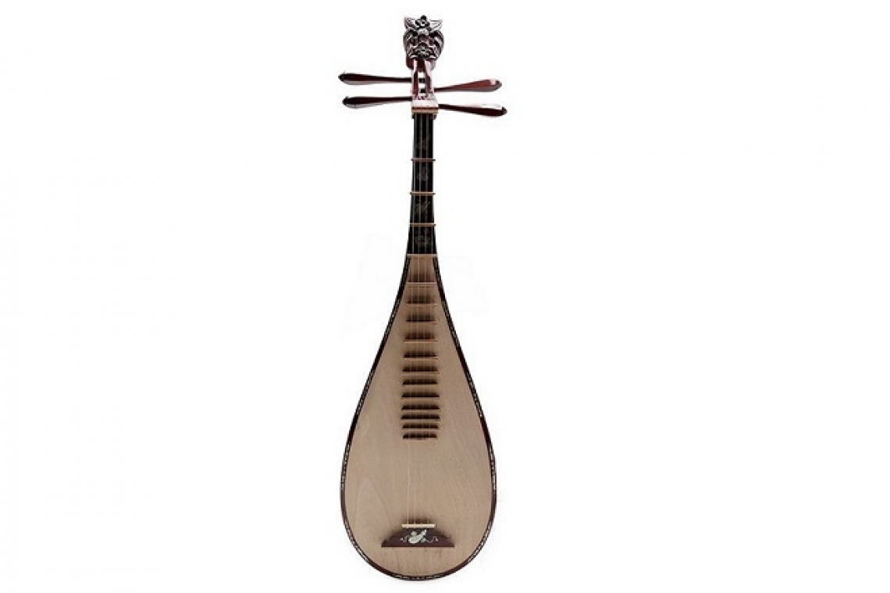
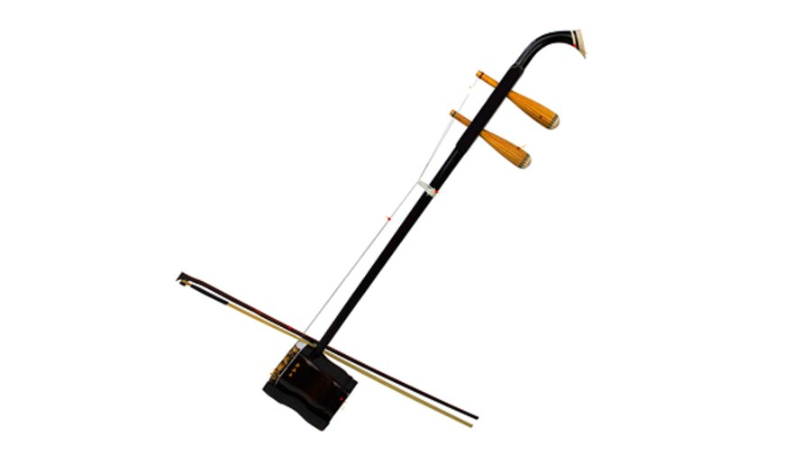

2 / 6

3 / 6

5 / 6

6 / 6


The origin of some Vietnamese musical instruments can be dated back to thousands of years ago, in the Hung Kings Dynasty, the first form of government known in Vietnam, while others were invented or upgraded from primitive ones about couple hundreds of years ago.
Vietnamese traditional instruments are played at performances of Vietnam traditional music including Xoan singing, Quan Ho love duet singing, Ca Tru ceremonial singing, Hue Royal Court Music, and Central Highland’s music which have all been recognized by UNESCO as intangible heritage of humanity.

Most of the traditional Vietnamese musical instruments are string, wind, and percussion instruments, which are made of natural materials like wood, bamboo, stones, ivory, and animal skins.
They can be played in solo or orchestra performances. While people in northern Vietnam use more string instruments, people in the mountainous area tend to create melodies with percussion and wind instruments.
To address the problem, the Institute of Musicology under the Vietnam National Academy of Music for many years has been working with schools to organize excursions to the institute to learn about and hear performances with traditional music instruments.
In special extracurricular lessons, students can learn about traditional music instruments of every ethnic group, and see artists’ perform and practice playing the instruments.
Folk songs to familiar children’s songs sound new and interesting when played with traditional musical instruments such as tam thap luc (Vietnamese hammer dulcimer with 36 metal strings) or dan bau (mochord).
The students’ excitement at hearing these performances showed that the special lessons aroused their curiosity and willingness to discover more about these instruments.
Pham Van Khang, headmaster of Phu Do Secondary School in Hanoi, said each lesson lasts 1.5 or 2 hours. The excursions to the music institute take more time than a lesson at school which lasts 45 minutes, but they are more effective.
“Bringing music into school helps students have practical experience that aids the preservation and promotion of Vietnam’s cultural heritage values.
“Students know the organ and piano better than traditional musical instruments. I think it is necessary to help students learn how to use traditional instruments. This will remind students of their roots and development periods of the country, increasing Vietnamese pride and patriotism,” he said.
Nguyen Lan Huong, a music teacher of Cat Linh Secondary School in Hanoi, said the success with exposing students to traditional performances was "beyond expectations".
At school, students have only one lesson of music each week. In textbooks, knowledge about both cultural heritage and traditional musical instruments remains modest.
As a result, many students make mistakes when talking about musical instruments or naming the instruments.
Huong noted young people will be the future audiences for traditional music.
“The popularization of traditional music means protection of our national culture. This will help solve the problem of people not being able to give the correct name of Vietnamese traditional instruments,” Huong said.
The Institute of Musicology organizes periodic meetings where the participants are general school students as well as university students, both Vietnamese and foreign, and postgraduates who want to learn about traditional musical instruments.
Dang said the institute uses different methods for different groups to help them approach music in the most effective way.
Many students are familiar with the western guitar, violin and piano but lack knowledge about traditional Vietnamese instruments.
He said that he discovered during a meeting with secondary school students in Hanoi that only 30 percent of students had basic knowledge about some musical instruments. He said this was understandable because they had had almost no contact with traditional music.
The excursions like the ones organized by the institute and general schools will give students opportunities to experience traditional musical instruments and view artists’ performances.
Vietnam had more than 100 traditional musical instruments used by 54 ethnic groups. With such a variety, leaders of the institute and teachers did not have high expectations that students would want to learn.
“We thought that it would be difficult for students to listen to traditional musical instruments, especially when modern music is developing brilliantly,” Dang explained.
However, they changed their minds after meeting the students.
“We realized that many students wanted to learn more about these musical instruments. We were more surprised when schools organized more trips to conservatories and musical instrument showrooms,” he said.
“We hope that in the future many young people will follow the path of professional traditional music,” he said.
Dang Thi Hoai Thu from the Institute of Musicology said the institute is trying to introduce traditional music to youth in a creative way. For example, musicians will play contemporary music with folk materials and instruments, as many artists from other countries do.
Architect & Engineer
One of the best-known musical instruments is the Đàn Tranh or 16-string Zither.